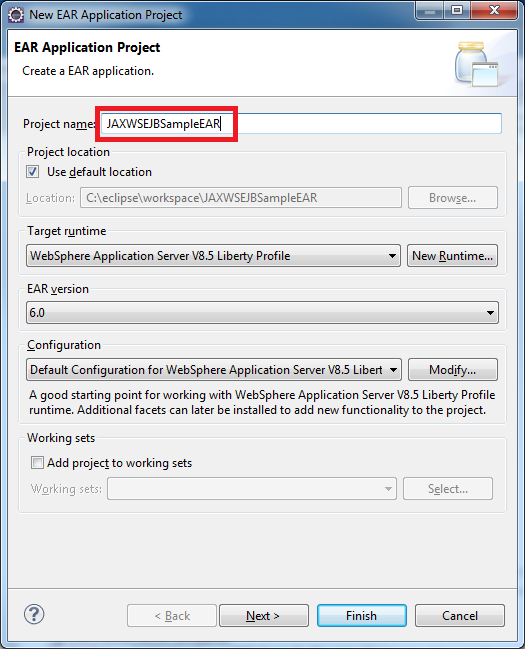
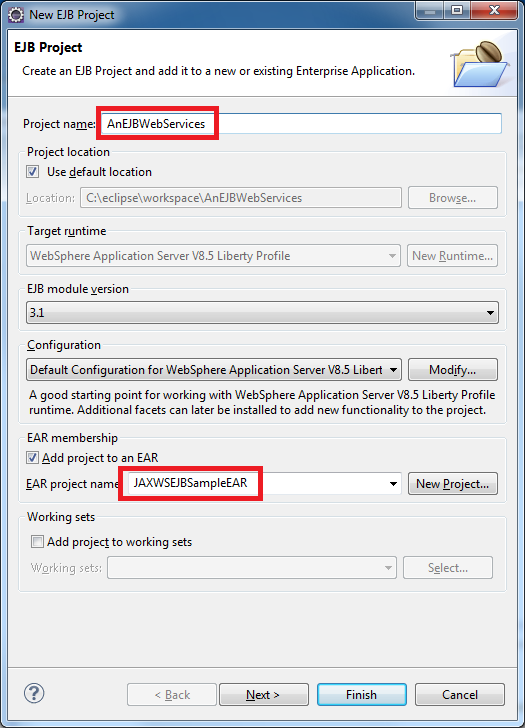
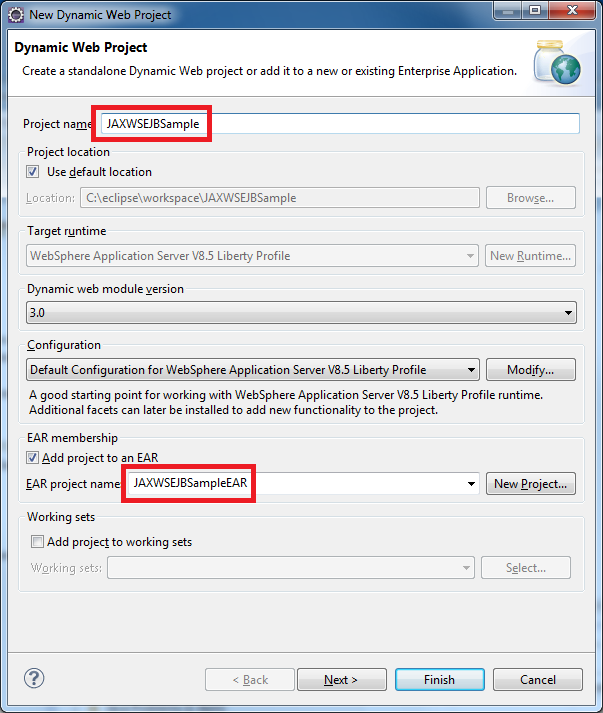
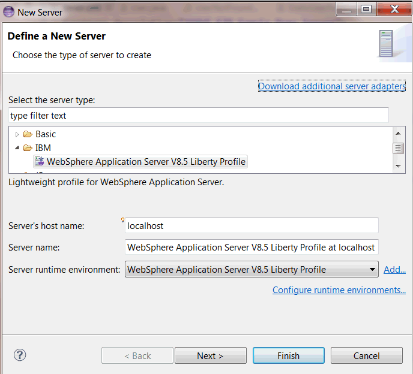
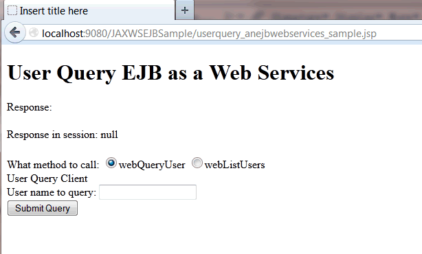

With the WebSphere Application Server V8.5.5 Liberty Profile you can use EJBs in a Web Services programming model. We’ve added the EJB Web Services Sample to show this in the Liberty repository. Here are some instructions on creating the User Query service demonstrated in the sample.
These instructions assume you’ve already installed both the Liberty profile with extended content, and that you know how to set up a server. If you haven’t done these things yet go to the Downloads page to take a look at getting set up.
- Create a new Liberty profile server in Eclipse, and add the
jaxws-2.2,ejbLite-3.1, andjsp-2.2features to theserver.xmlfile, which should resemble the content below:<server description="new server"> <!-- Enable features --> <featureManager> <feature>jaxws-2.2</feature> <feature>ejbLite-3.1</feature> <feature>jsp-2.2</feature> </featureManager> <httpEndpoint host="localhost" httpPort="9080" Â Â Â Â Â Â Â Â Â httpsPort="9443" id="defaultHttpEndpoint"/> </server> - Create an Enterprise Application project named JAXWSEJBSampleEAR.
 - Create a new EJB project called AnEJBWebServices and add it to JAXWSEJBSampleEAR Click Next until the EJB client jar panel, then clear the check box for creating the AnEJBWebServicesClient.
 - In the AnEJBWebServices project create a com.ibm.liberty.jaxws.demo2.ejbwebservices.User class with the following code:
package com.ibm.liberty.jaxws.demo2.ejbwebservices; import java.util.Date; public class User { private String name; private Date registerDate; public User() {} public User(String name, Date registerDate) { this.name = name; this.registerDate = registerDate; } public String getName() {return name;} public void setName(String name) {this.name = name;} public Date getRegisterDate() {return registerDate;} public void setRegisterDate(Date registerDate) { this.registerDate = registerDate;} } - In the AnEJBWebServices project create a com.ibm.liberty.jaxws.demo2.ejbwebservices.UserNotFoundException class with the following code:
package com.ibm.liberty.jaxws.demo2.ejbwebservices; public class UserNotFoundException extends Exception { private String userName; public UserNotFoundException() {super();} public UserNotFoundException(String userName) { this.userName = userName;} public String getUserName() {return this.userName;} public void setUserName(String userName) { this.userName = userName;} } - In the AnEJBWebServices project create a com.ibm.liberty.jaxws.demo2.ejbwebservices.StaticUserRepository class with the following code:
package com.ibm.liberty.jaxws.demo2.ejbwebservices; import java.util.Date; import java.util.HashMap; import java.util.Map; public class StaticUserRepository { private static final Map<String, User> nameUserMap = new HashMap<String, User>(); static { nameUserMap.put("Tom", new User("Tom", new Date(System.currentTimeMillis()))); nameUserMap.put("Jerry", new User("Jerry", new Date(System.currentTimeMillis() - 24 * 3600 * 1000 * 15L))); nameUserMap.put("McQueen", new User("McQueen", new Date(System.currentTimeMillis() - 24 * 3600 * 1000 * 30L))); } public static User getUser(String userName) throws UserNotFoundException { User user = nameUserMap.get(userName); if (user == null) { throw new UserNotFoundException(userName); } return user; } public static User[] listUsers() { return nameUserMap.values().toArray(new User[] {}); } } - Create an SEI implementation class com.ibm.liberty.jaxws.demo2.ejbwebservices.UserQuery with the following code:
package com.ibm.liberty.jaxws.demo2.ejbwebservices; import javax.ejb.Stateless; import javax.jws.WebService; @Stateless @WebService public class UserQuery { public User getUser(String userName) throws UserNotFoundException { return StaticUserRepository.getUser(userName); } public User[] listUsers() { return StaticUserRepository.listUsers(); } } - Create a dynamic web project JAXWSEJBSample as the web services client application.
 - Use wsgen command to generate the WSDL file. Run the command as below, ensuring <temp.dir> already exists:
<wlp.install.dir>binjaxwswsgen.bat -cp <path_to_compiled_SEI_class>;<wlp.install.dir>devapispeccom.ibm.ws.javaee.ejb.3.1_1.0.0.jar -d <temp.dir> -keep -r <temp.dir> -s <temp.dir> -wsdl com.ibm.liberty.jaxws.demo2.ejbwebservices.UserQuery
This command will generate a WSDL file and its schema in folder <temp.dir>.
- Place the UserQueryService.wsdl file and the UserQueryService_schema1.xsd file into the WebContent/WEB-INF/wsdl folder of the JAXWSEJBSample project. You may need to create this folder.
- Use wsimport command to generate the web services client classes. For example,
<wlp.install.dir>binjaxwswsimport.bat -d <temp.dir> -keep -p com.ibm.liberty.jaxws.demo2.ejbwebservices.webclient -s <temp.dir> -verbose <temp.dir>UserQueryService.wsdl -target 2.2
This command will generate the web services client artifacts to use.
- Copy the generated source files and their packages in <temp.dir>comibmlibertyjaxwsdemo2ejbwebserviceswebclient into the JAXWSEJBSample project.
- In the JAXWSEJBSample project create a com.ibm.liberty.jaxws.demo2.ejbwebservices.webclient.EJBWebServicesWebClientServlet and include the following:
@WebServlet("/EJBWebServicesWebClientServlet") public class EJBWebServicesWebClientServlet extends HttpServlet { private static final String SEI_URI = "AnEJBWebServices/UserQueryService"; @WebServiceRef(value = UserQueryService.class, wsdlLocation = "WEB-INF/wsdl/UserQueryService.wsdl") private UserQuery userQuery; @Override protected void doPost(HttpServletRequest req, HttpServletResponse resp) throws ServletException, IOException { String method = req.getParameter("method"); if (method.equals("webQueryUser")) { webQueryUser(req, resp); } else if (method.equals("webListUsers")) { webListUsers(req, resp); } else { req.setAttribute("demoResponse", "Unable to recognize the test method "" + method + """); req.getRequestDispatcher("userquery_anejbwebservices_sample.jsp").forward(req, resp); } } public void webQueryUser(HttpServletRequest req, HttpServletResponse resp) throws IOException, ServletException { String username = req.getParameter("username") == null ? "Tom" : req.getParameter("username"); try { setEndpointAddress((BindingProvider) userQuery, req, SEI_URI); User user = userQuery.getUser(username); if (user == null) { req.setAttribute("demoResponse","User " + username + " not found!"); } else { req.setAttribute("demoResponse","Found user: " + user.getName() + " who is registered at " + user.getRegisterDate()); } } catch (UserNotFoundException_Exception e) { req.setAttribute("demoResponse","Oops! An UserNotFoundException is thrown, error message is "" + e.getMessage() + """); } finally { req.getRequestDispatcher("userquery_anejbwebservices_sample.jsp").forward(req, resp); } } public void webListUsers(HttpServletRequest req, HttpServletResponse resp) throws IOException, ServletException { setEndpointAddress((BindingProvider) userQuery, req, SEI_URI); List<User> users = userQuery.listUsers(); if (users == null) { req.setAttribute("demoResponse", "An error happened, user list is not returned!"); } else { StringBuffer returnString = new StringBuffer(); returnString.append("Got user list:n"); for (User aUser : users) { returnString.append("User: " + aUser.getName() + ", registration time: " + aUser.getRegisterDate() + "n"); } req.setAttribute("demoResponse", returnString.toString()); } req.getRequestDispatcher("userquery_anejbwebservices_sample.jsp").forward(req, resp); } protected void setEndpointAddress(BindingProvider bindingProvider, HttpServletRequest request, String endpointPath) { bindingProvider.getRequestContext().put(BindingProvider.ENDPOINT_ADDRESS_PROPERTY, "http://" + request.getServerName() + ":" + request.getServerPort() + "/" + endpointPath); } } - Create a new JSP file called userquery_anejbwebservices_sample.jsp in the WebContent folder of the JAXWSEJBSample project and add the following code between the <body> and </body> elements:
<h1>User Query EJB as a Web Services</h1> <div> Response: <c:out value="${demoResponse}" default="" /> </div> <br /> <div>Response in session: <%=request.getSession().getAttribute("demoResponse")%> </div> <br /> <form action="EJBWebServicesWebClientServlet" method='post'> What method to call: <input type="radio" name="method" value="webQueryUser" />webQueryUser <input type="radio" name="method" value="webListUsers" />webListUsers <div>User Query Client</div> <div> User name to query: <input type='text' name='username' id="username" /> </div> <div> <input type='submit' name='submit' /> </div> </form>You will also need to add the following taglib declaration before the <%@ page ..> tag:
<%@ taglib prefix="c" uri="http://java.sun.com/jsp/jstl/core"%>
- If you haven’t already, define a WebSphere Application Server v8.5 Liberty Profile server in the Servers view:
 - Deploy the JAXWSEJBSampleEAR.ear to the Liberty profile server. You can just drag-and-drop the JAXWSEJBSampleEAR project to Liberty server definition to deploy it.
- Go to http://localhost:9080/JAXWSEJBSample/userquery_anejbwebservices_sample.jsp in a browser to check the sample.
- To verify the published User Query EJB web service, go to http://localhost:9080/AnEJBWebServices/UserQueryService.
The EJB based web services will create a virtual web module with the EJB module name as the web context root to publish the service endpoint. The EJB based web service endpoint address is something like this:
http://<server_hostname>:<server_port>/<EJB_module_name>/<service_name>For example, User Query EJB web service in this sample will publish an endpoint address like this:
http://localhost:9080/AnEJBWebServices/UserQueryService - Enter the web method name and user name, then click Submit button. The result will be like this:

{kind=link}
{kind=link}
{kind=link}
{kind=link}
{kind=link}
Step 9 does have a few ambiguities.
– path_to_compiled_SEI_class – you might have to peruse your eclipse workspace to find this folder.
– the javaee jar – the number changes with each Liberty version, so it might not be exactly as in the article.
– temp.dir – this is a temporary folder of your own choosing that you created first.
For example, in my case,
cd C:\tmp\liberty\16003\wlp\bin\jaxws
md tmp
wsgen.bat -cp C:\eclipse_mars\workspace1\AnEJBWebServices\build\classes;..\..\dev\api\spec\com.ibm.ws.javaee.ejb.3.1_1.0.14.jar
-d tmp -s tmp -wsdl com.ibm.liberty.jaxws.demo2.ejbwebservices.UserQuery
everything went well , but in the end i couldn’t reach my published services using http://:// URL i got 404 page not found , also i couldn’t find \dev\api\spec\com.ibm.ws.javaee.ejb.3.1_1.0.0.jar on my machine what is this exactly and why we need to add it as i skipped it , thanks all
All good….
The WSDL is generating perfectly.
The WebService Tester is also working fine.
but i am getting error instantiating the servlet class after hitting the submit button when I want to test from the UI.
Stuck also on step 9, but I would like to know what do you mean by the path to the compiled SEI class? Trying to do this tutorial to be able to run a Liberty profile server that supports ejb configuration.
Hi, as well step 9 problem:
used the following command:
c:\Liberty Server 8.5.5.2>.\bin\jaxws\wsgen.bat -cp ;\dev\api\spec\com.ibm.ws.ja
vaee.ejb.3.1_1.0.0.jar -d temp -keep -r temp -s temp -wsdl com.ibm.liberty.jaxws
.demo2.ejbwebservices.UserQuery
Got the error:
Class not found: “com.ibm.liberty.jaxws.demo2.ejbwebservices.UserQuery”
Liberty installation dir is c:\Liberty Server 8.5.5.2
Eclipse workspace dir:
d:\eclipse\workspace-kepler\
In step 9, please notice the “-cp ＜path_to_compiled_SEI_class＞;＜wlp.install.dir＞\dev\api\spec\com.ibm.ws.javaee.ejb.3.1_1.0.0.jar” is used to configure classpath to all needed classes when running the command. Please note the semicolon “;” is used as delimiter between two paths.
But in your command “-cp ;\dev\api\spec\com.ibm.ws.javaee.ejb.3.1_1.0.0.jar”. There is only one path to the jar file, and there is no ＜path_to_compiled_SEI_class＞ before semicolon. If your compiled classes are placed in the current folder, you should write it as “-cp .\;\dev\api\spec\com.ibm.ws.javaee.ejb.3.1_1.0.0.jar”.
In the above comment I wanted to write: What is the “temp.dir”?
In step 9 it clearly stated “This command will generate a WSDL file and its schema in folder “. So is one existing folder where you want to place the generated WSDL and XSD files to.
HI
Can someone you tell me what is the ? (step 9), and how exactly I can execute the commands
\bin\jaxws\wsgen.bat -cp ;
\dev\api\spec\com.ibm.ws.javaee.ejb.3.1_1.0.0.jar -d -keep -r -s -wsdl com.ibm.liberty.jaxws.demo2.ejbwebservices.UserQuery
I am new with Eclipse.
Thanks you in advance.
\bin\jaxws\wsgen.bat -cp ;\dev\api\spec\com.ibm.ws.javaee.ejb.3.1_1.0.0.jar -d -keep -r -s -wsdl com.ibm.liberty.jaxws.demo2.ejbwebservices.UserQuery
You replace all variables like “” to the actual folders you have. And then run this command line in windows cmd window, or linux/unix term. Do not run it in Eclipse.